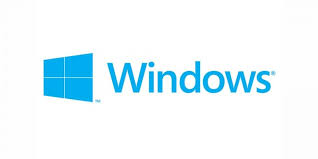

Sistema Operativo Windows

Windows es un sistema operativo desarrollado por la compañía Microsoft. Consiste en un software conformado por un conjunto de programas que permiten gestionar y controlar el funcionamiento de las partes de un ordenador, como la memoria, el disco de almacenamiento y los dispositivos periféricos, y la ejecución de otros programas y aplicaciones.
Características
Windows evolucionó notablemente a través de los años, sin embargo, mantiene características que lo identifican y que destacan su personalidad. Entre las principales se encuentran:
- El escritorio: Consiste en el fondo de la pantalla del monitor que es la base sobre la que el usuario puede ejecutar el sistema operativo, los programas y aplicaciones.
- Los íconos: Consisten en pequeñas imágenes simbólicas de acceso directo a programas, archivos o carpetas, que se localizan en el escritorio. El tipo de ícono y su ubicación pueden ser personalizados por el usuario.
- La barra de tareas: Consiste en una barra ubicada en la parte inferior del escritorio que permite visualizar, mediante íconos, los programas, archivos o carpetas que se encuentran activos, para seleccionarlos de manera rápida.
- Botón de inicio: Consiste en un acceso al menú principal desplegable. El botón se encuentra ubicado en la parte inferior de la barra de tareas.
- El menú: Consiste en un panel o lista desplegable que se puede visualizar u ocultar desde el botón de inicio. Ofrece accesos directos a programas, a archivos y a determinadas funciones del equipo (como de mantenimiento del equipo o de dispositivos).
Ventajas y Desventajas
Ventajas
- Compatibilidad con prácticamente todo el hardware: debido a que el 95% de los usuarios utilizan el sistema operativo Windows, la mayoría de los proveedores de hardware fabrican controladores para Windows.
- Facilidad de uso:todas las versiones de Microsoft Windows tienen algo en común: la facilidad que tienen los usuarios de cambiar de una versión a otra. Los usuarios de Windows 7 y 8 no tienen dificultad para migrar a Windows 10 porque la mayoría de las funciones de Windows 10 son las mismas que las de Windows 7. La interfaz de usuario de Windows también es más sencilla de usar que UNIX y MAC.
- Soporte de software: Windows tiene una gran audiencia, por lo que los desarrolladores prefieren crear utilidades, juegos y software para el sistema operativo Windows, disminuyendo la aparición de “bugs” y en muchas ocasiones una mayor optimización. Además, los usuarios de Linux no pueden crear aplicaciones de Windows, por lo que es mejor usar Windows para desarrollar aplicaciones.
- Función Plug and Play: la mayoría del hardware se puede detectar automáticamente mediante la función Plug and Play. A partir de la aparición de Windows 10, el usuario prácticamente se ha olvidado de los discos de instalación o descarga de drivers para el hardware del equipo. Actualmente, al instalar una cámara web, teclado, mouse, dispositivo móvil, etc. El sistema operativo lo reconocerá y actualizará de forma automática y sencilla.
- Escritorio y pantalla táctil: Windows 10 está diseñado tanto para dispositivos con pantalla táctil como para computadoras de escritorio. La interfaz de usuario de Windows 10 está hecha de tal manera que funciona mejor para cualquier tipo de dispositivo de Windows.
Desventajas
- Ataques de virus elevado: Windows tiene una gran cantidad de ataques de malware. Los piratas informáticos pueden romper fácilmente la seguridad de Windows. Por lo tanto, los usuarios de Windows dependen del software antivirus y tienen que pagar cargos mensuales a las empresas para proteger sus datos. Además, los usuarios de Windows deben actualizar el sistema operativo para mantenerse al día con los parches de seguridad.
- La mayor parte del software es de pago: existe una gran variedad de programas, por ejemplo, los videojuegos, software de gráficos (Photoshop), administradores de descargas (IDM), software de gestión, contabilidad, etc. Todos estos programas tienen algo en común, tienes que comprarlos o pagar una cuota mensual para usarlos.
- Alto precio en la mayoría de las licencias: mientras que el sistema operativo Linux es de código abierto y es de uso gratuito para todos, el sistema operativo Windows hay que pagar para adquirir una licencia. Además, si utiliza su ordenador para ofimática o estudiar, es necesario comprar otros softwares como Microsoft Office para poder usar Excel, PowerPoint o Word.
- Soporte técnico: el soporte de Windows en ocasiones deja mucho que desear para la mayoría de los usuarios individuales. Solo algunas organizaciones grandes pueden obtener un buen soporte dado su poder de negociación. Es por esto, que existen tantos foros con soluciones variadas para problemas de todo tipo (aunque no siempre funcionen).
Estabilidad y Rendimiento
Estabilidad en Windows
- Gestión de memoria: Windows utiliza una gestión de memoria avanzada que incluye memoria virtual y paginación para asegurar que las aplicaciones y procesos tengan acceso a la memoria necesaria sin conflictos. La protección de memoria evita que una aplicación acceda a la memoria asignada a otra, lo que reduce el riesgo de fallos del sistema.
- Actualizaciones periódicas: Microsoft lanza actualizaciones regulares que incluyen parches de seguridad y mejoras en la estabilidad del sistema. Las actualizaciones pueden ser automáticas, garantizando que el sistema esté protegido contra nuevas vulnerabilidades.
- Registro de eventos y diagnósticos: Windows incluye herramientas de registro de eventos y diagnósticos que permiten a los administradores y usuarios identificar y solucionar problemas de manera eficiente. Herramientas como el Visor de Eventos, el Monitor de Confiabilidad y el Administrador de Tareas son esenciales para el monitoreo del sistema.
- Controladores y compatibilidad: La compatibilidad con una amplia gama de hardware y la disponibilidad de controladores certificados por Microsoft aseguran una mayor estabilidad del sistema.
Rendimiento en Windows
- Optimización de recursos: Windows administra de manera eficiente los recursos del sistema (CPU, memoria, almacenamiento), permitiendo que las aplicaciones funcionen de manera fluida. El uso de algoritmos de planificación de procesos asegura que las tareas críticas tengan prioridad.
- Herramientas de rendimiento: El Administrador de Tareas proporciona una visión detallada del uso de recursos por parte de aplicaciones y servicios, permitiendo a los usuarios identificar cuellos de botella de rendimiento. El Monitor de Recursos y el Monitor de Rendimiento ofrecen análisis más profundos y detallados del rendimiento del sistema.
- Almacenamiento y sistema de archivos: Windows utiliza sistemas de archivos como NTFS y ReFS que son conocidos por su robustez y rendimiento. La desfragmentación y optimización de discos ayuda a mantener el rendimiento del almacenamiento a lo largo del tiempo.
- Optimización de inicio y apagado: Windows implementa técnicas como el inicio rápido (Fast Startup) y la hibernación para reducir el tiempo de arranque y apagado del sistema. La administración de servicios y aplicaciones de inicio minimizan los tiempos de espera y mejora la experiencia del usuario.
Nivel de seguridad
Protección contra malware y amenazas
Windows Defender Antivirus:
- Integrado en el sistema operativo, proporciona protección en tiempo real contra virus, malware, spyware y otras amenazas.
- Actualizaciones frecuentes de definiciones de virus aseguran que el sistema esté protegido contra las amenazas más recientes.
Windows Defender SmartScreen:
- Ayuda a proteger contra sitios web y aplicaciones maliciosas, bloqueando descargas potencialmente peligrosas y advirtiendo sobre sitios web sospechosos.
Seguridad de red
Firewall de Windows Defender:
- Un firewall robusto que monitorea y controla el tráfico de red entrante y saliente basado en reglas predefinidas y personalizadas.
Cifrado de datos:
- BitLocker: Cifra discos duros completos para proteger datos contra el acceso no autorizado, especialmente en casos de pérdida o robo de dispositivos.
- BitLocker To Go: Extiende las capacidades de cifrado a unidades extraíbles como USB y discos duros externos.
Autenticación y control de acceso
Windows Hello:
- Proporciona autenticación biométrica mediante reconocimiento facial, huellas dactilares o iris, ofreciendo un acceso seguro y conveniente al dispositivo.
Autenticación multifactor (MFA):
-
Integra soporte para autenticación multifactor, aumentando la seguridad al requerir múltiples formas de verificación antes de permitir el acceso.
Control de cuentas de usuario (UAC):
- Pide confirmación para realizar cambios importantes en el sistema, previniendo que software no autorizado realice modificaciones críticas.
Protección de identidad y datos
Credential Guard:
- Utiliza virtualización basada en hardware para aislar y proteger las credenciales de los usuarios, reduciendo el riesgo de ataques basados en robo de credenciales.
Device Guard:
- Bloquea la ejecución de aplicaciones que no estén explícitamente permitidas por políticas definidas, protegiendo contra software no autorizado y malware.
Gestión de parches y actualizaciones
Windows Update:
- Proporciona actualizaciones automáticas de seguridad y mejoras de sistema, asegurando que las vulnerabilidades conocidas sean corregidas de manera oportuna.
Seguridad en la nube
Microsoft Defender for Endpoint:
- Ofrece protección avanzada contra amenazas a través de la nube, con capacidades de detección y respuesta ante amenazas (EDR), análisis de seguridad y protección de dispositivos.
Seguridad de aplicaciones y navegador
Microsoft Edge y Protección de Aislamiento:
- Microsoft Edge incluye características de seguridad avanzadas como aislamiento del navegador y protección contra exploits para navegar de forma segura por la web.
Consejos para mejorar la seguridad en Windows
Mantener el sistema y software actualizado:
- Instala todas las actualizaciones de Windows y aplicaciones de terceros para asegurar que las vulnerabilidades conocidas sean corregidas.
Utilizar contraseñas seguras y autenticación multifactor:
- Emplea contraseñas robustas y habilita la autenticación multifactor para proteger las cuentas de usuario.
Habilitar y configurar BitLocker:
- Asegúrate de que los discos duros estén cifrados para proteger los datos en caso de pérdida o robo del dispositivo.
Implementar políticas de seguridad:
- Define y aplica políticas de seguridad claras, incluyendo el uso de Device Guard y Credential Guard para proteger contra amenazas avanzadas.
Realizar copias de seguridad regulares:
- Mantén copias de seguridad actualizadas de los datos críticos para prevenir la pérdida de información en caso de un incidente de seguridad.
Monitorear y analizar el tráfico de red:
- Utiliza herramientas de análisis y monitoreo de red para detectar y responder a actividades sospechosas.
Costo de licencia
El costo de la licencia de Windows puede variar considerablemente dependiendo de la edición del sistema operativo, el tipo de licencia (OEM, Retail, Volumen) y el contexto de uso (personal, empresarial, educativo). A continuación, se detallan las principales ediciones de Windows y sus costos aproximados, así como los diferentes tipos de licencias disponibles.
Ediciones de Windows y sus costos
Windows 10 Home/Windows 11 Home: Diseñado para usuarios domésticos y ofrece todas las funcionalidades básicas necesarias para el uso diario.
- Costo aproximado: $139 USD
Windows 10 Pro/Windows 11 Pro: Incluye todas las características de la edición Home, además de funciones adicionales orientadas a profesionales y empresas, como BitLocker, acceso remoto y políticas de grupo.
- Costo aproximado: $199.99 USD
Windows 10 Pro/Windows 11 Pro: Incluye todas las características de la edición Home, además de funciones adicionales orientadas a profesionales y empresas, como BitLocker, acceso remoto y políticas de grupo.
- Costo aproximado: $199.99 USD
Windows 10 Pro for Workstations/Windows 11 Pro for Workstations: Dirigido a usuarios avanzados y profesionales que necesitan un rendimiento superior y capacidades avanzadas de manejo de datos y recursos.
- Costo aproximado: $309 USD
Windows 10 Enterprise/Windows 11 Enterprise: Diseñado para grandes organizaciones con necesidades avanzadas de seguridad y administración. Generalmente se adquiere a través de acuerdos de licenciamiento por volumen.
- Costo: Variable, basado en el acuerdo de licenciamiento por volumen y las necesidades específicas de la organización.
Windows 10 Education/Windows 11 Education:Similar a la edición Enterprise, pero destinada a instituciones educativas. Ofrece características avanzadas de administración y seguridad adaptadas al entorno educativo.
- Costo: Variable, basado en el acuerdo de licenciamiento por volumen y las necesidades específicas de la organización.
Windows 10 Education/Windows 11 Education: Similar a la edición Enterprise, pero destinada a instituciones educativas. Ofrece características avanzadas de administración y seguridad adaptadas al entorno educativo.
- Costo: Variable, generalmente a precios reducidos para instituciones educativas a través de acuerdos específicos.
Tipos de licencias de Windows
Licencia OEM (Original Equipment Manufacturer): Estas licencias son adquiridas por fabricantes de hardware y preinstaladas en equipos nuevos. Generalmente más económicas que las licencias Retail, pero están vinculadas al hardware original y no pueden transferirse a otro equipo.
Licencia Retail: Comprada directamente por consumidores a través de tiendas físicas o en línea. Puede transferirse a otro equipo si se desactiva en el equipo anterior. Incluye soporte técnico de Microsoft.
Licenciamiento por Volumen: Diseñado para empresas, instituciones educativas y organizaciones gubernamentales. Permite adquirir múltiples licencias con precios reducidos y administrar todas las instalaciones desde una plataforma centralizada.
Licencia de Suscripción (Microsoft 365): Incluye Windows junto con otros servicios y aplicaciones de Microsoft, como Office 365. Se paga una tarifa mensual o anual y proporciona acceso a actualizaciones y nuevas versiones mientras la suscripción esté activa.
Costo aproximado: Dependiendo del plan, puede variar desde $12.50 USD por usuario/mes para Microsoft 365 Business Standard hasta planes empresariales más avanzados que incluyen características adicionales.
Consideraciones Adicionales
- Descuentos educativos: Instituciones educativas y estudiantes a menudo pueden obtener descuentos significativos en las licencias de Windows.
- Descuentos para empresas: Las empresas pueden negociar precios más bajos a través de acuerdos de licenciamiento por volumen.
- Promociones y ofertas: Microsoft y sus socios de ventas a menudo ofrecen promociones y descuentos temporales que pueden reducir el costo de las licencias. Es importante considerar el uso específico y las necesidades al elegir la edición y tipo de licencia de Windows. Además, es recomendable comprar las licencias a través de canales oficiales para asegurar su validez y obtener soporte adecuado.